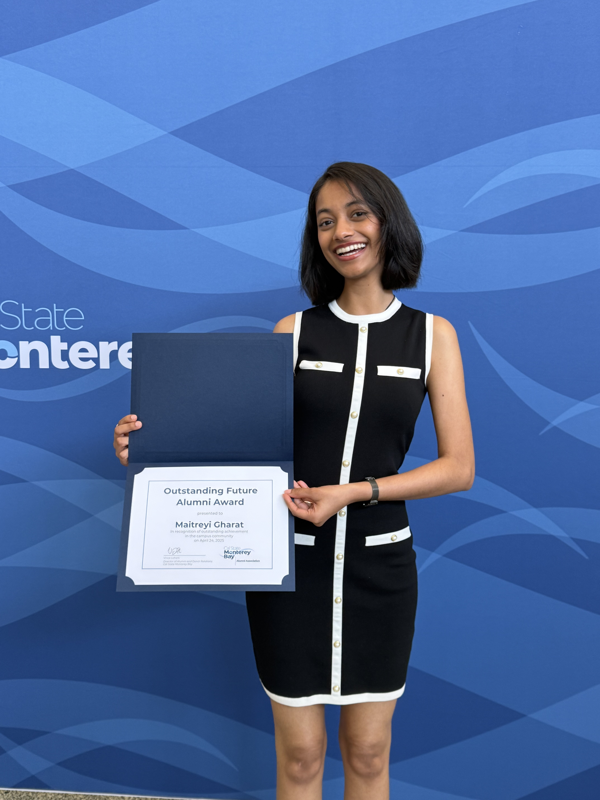
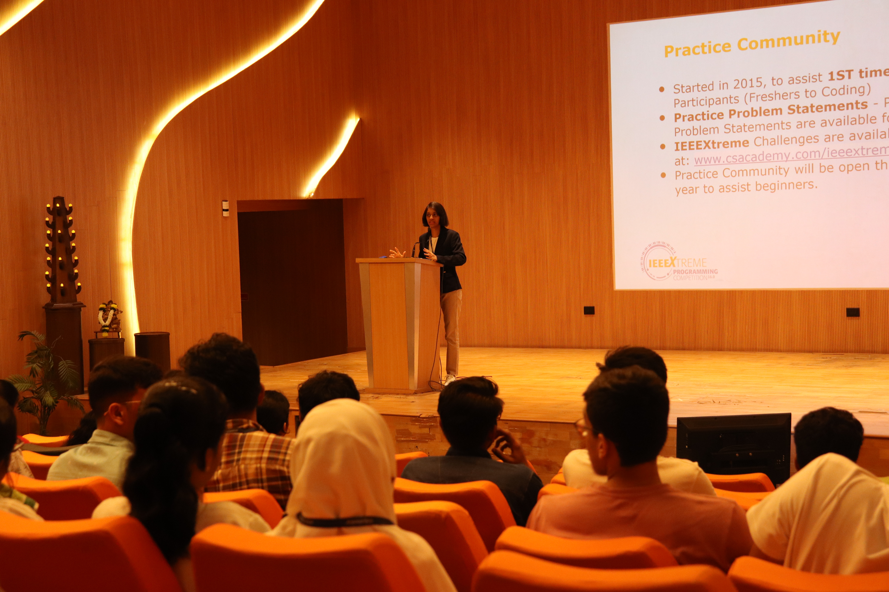
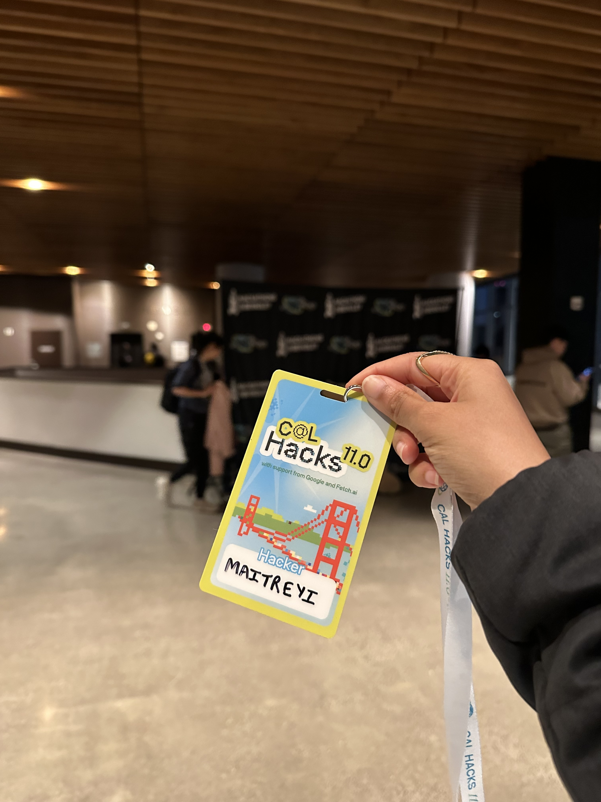
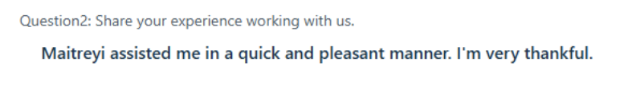
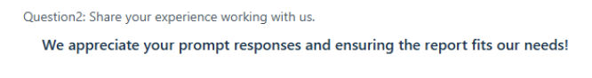
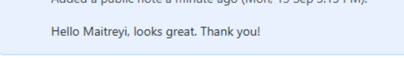
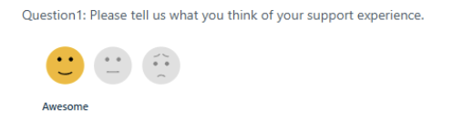
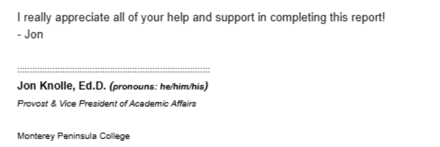
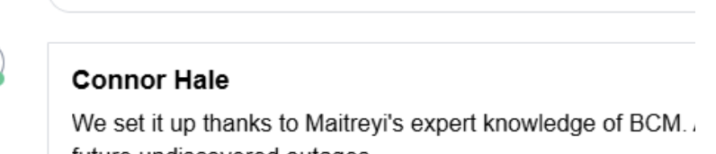

Tech Stack
The tools I use to build, ship, and support data-driven solutions.
 Snowflake
SnowflakePython
Java
PostgreSQL
Oracle
AWS
Azure
JavaScript
Laravel
Git
 Jira
JiraT
Tableau
X
Excel
I'm a Data Engineer, a Solutions Engineer and a self-proclaimed Snowflake fan.
Designing and delivering data and AI solutions, from first demo to production support.
A live look at how a project actually moves.
Now
Understand
Talking to the people who'll use it.
Next
Design & Build
Prototyping the smallest version that works.
Later
Support & Iterate
Training people, then improving from real use.
01. Scale
Reporting models supporting 9,000+ students per term.
02. Snowflake
Cortex AI pipelines improving anomaly detection accuracy by 71%.
03. Support
Direct training and technical support across 3 departments.
I work at the intersection of data platforms and applied AI; building the pipelines, integrations, and tools that turn raw data into something people can actually act on.
I architect the pipelines and systems that turn fragmented, inconsistent data into something an organization can actually trust and act on, then layer AI on top to surface signal that would otherwise stay buried. But engineering the solution is only half the equation. I've spent just as much time translating that work for the people who depend on it: running demos, training end users, and adapting systems to fit how a team actually operates rather than forcing them to adapt to the system. That same instinct for connecting technical depth to real-world usability extends naturally toward GTM and product-adjacent work too.
Problem
Fiscal invoices and daily email notifications were prepared and sent manually, consuming significant staff time every day.
Solution
Orchestrated Snowflake Tasks and stored procedures to automatically process and prepare data payloads, triggering notifications through AWS SNS. Cut manual processing effort by 88%.
Also part of this role
Architected and manage an end-to-end Medallion architecture in Snowflake, designing bronze, silver, and gold layers to ingest and transform large-scale datasets from AWS S3 via Snowpipe for daily automated updates.
Use Kiro AI to accelerate pipeline development and SQL implementation, improving efficiency across data modeling, debugging, and automation.
Own Snowflake as the core data platform, optimizing Virtual Warehouses, schema design, and query performance for reliable, scalable production operations.
Seeing it from their side
😩
Before
Invoices and emails prepared and sent manually.
😌
After
Fully automated, 88% less manual effort.
What I actually track
Problem
Approval routing and processing depended on manual steps, which consumed staff time and extended completion time unnecessarily: approvers often took a long time to act, and requestors frequently forgot to check whether their requisition had been approved or rejected.
Solution
Engineered database-level workflow automation with SQL triggers and procedural logic, adding hierarchy-based approval routing that automatically notified the next approver in line, plus automatic status notifications so requestors no longer had to manually check approval status. This cut turnaround from 3 to 4 weeks down to under a week.
Also part of this role
Built 35+ SQL reporting and funding calculation models across fiscal, financial aid, and academic operations.
Debugged and optimized ERP (Ellucian Banner) integration pipelines, validating SQL transformations and data reconciliation.
Served as the go-to technical contact for the Fiscal, Financial Aid, and Foundation offices: training staff, troubleshooting reports after patches and process changes, and handling access and account setup requests.
Translated the Financial Aid Office's manual processing rules into custom database logic, so the system fit their workflow instead of the other way around.
Seeing it from their side
😩
Before
Approvals and routing done manually.
😌
After
Approvals now take under a week, with automatic notifications at every step.
What I actually track
Spearheaded the design of an AI-powered wireframe generator using Python, Ollama (LLaMA 3), LLaVA, Gradio, and Draw.io, converting text and sketches into structured UI wireframes. One project, several distinct problems to solve along the way.
Problem 1
Designers work differently
Some wanted to type a description, others preferred sketching by hand. Supported both text-to-image and image-to-image generation, so either path led to a usable wireframe.
Problem 2
One model wasn't enough
LLaMA 3 alone only handled text-to-image. Paired it with LLaVA to cover image-to-image too, fitting existing models to the task rather than training something new.
Problem 3
Speed was the actual goal
Designers were losing hours to manually building initial wireframes. The tool had to output a structured, usable wireframe directly, not just a rough image, since that speed gain was the whole point.
Problem 4
Designers want the option to refine
Even a strong first draft benefits from a designer's final touch. Integrated Draw.io so the generated wireframe could be opened and edited directly, giving designers that option without leaving the workflow.
Problem
Production Python and SQL Server pipelines had recurring runtime errors and data inconsistencies, undermining the reliability of dashboards that business decision-makers relied on directly.
Solution
Audited the Python and SQL Server processes end to end, independently identifying root causes and implementing preventative validation checks. Built Power BI and Tableau dashboards tracking shareholder metrics across countries, share types, and communication channels.
What I actually track
Story 1: Data
Problem
12 years of institutional fee data across CSU campuses existed in unstructured, messy formats, with no consistent way to compare fees across campuses or years.
Solution
Extracted, cleaned, and standardized 12 years of fee data across all 23 CSU campuses, building Tableau dashboards for cross-campus comparison and strategic reporting.
View Dashboard ↗Story 2: Growth
Problem
CSUMB Admissions had little presence on TikTok and a small Instagram following, limiting reach with prospective students.
Solution
Planned and ran content strategy and campaigns across both platforms, including on-camera modeling, growing Admissions Instagram from roughly 200 to 2,500 followers and Admissions TikTok from 0 to 220, while also growing the main CSUMB TikTok from hundreds to thousands.
View Content ↗Also part of this role
Managed the CSUMB website using Terminal 4, and optimized query/answer accuracy for the Ocelot chatbot.
Shot event and campus photography used across marketing channels.
Data, by the numbers
Growth, by the numbers
Project Nº 1 · SNOWFLAKE · AI
Designed a Snowflake schema data warehouse with optimized ETL/ELT pipelines across 100K+ records, using Dynamic Tables, Tasks, and Streams. Applied Cortex AI-powered SQL functions for anomaly detection, improving query performance by 25% and detection accuracy by 71%.
Project Nº 2 · AI · WELLNESS
Built a web app using MediaPipe to capture and process 468 facial landmarks in real time. Integrated Claude API to analyze biomarker data and generate personalized wellness recommendations.
Project Nº 3 · PYTHON · ACCESSIBILITY
Built a Python audiobook reader processing 100 pages in under 30 seconds using PyPDF2 and pyttsx3, increasing accessibility by 30% with 95% user satisfaction in closed testing.
Project Nº 4 · FULL-STACK
Built a multi-user platform with authentication, backend routing, and structured relational data models using Laravel, JavaScript, and SQL.
Project Nº 5 · ORACLE SQL
Designed and deployed a structured employee management system using Oracle SQL, applying normalization and indexing strategies to improve query execution speed and data integrity.
Project Nº 6 · TABLEAU · IPEDS DATA
Peer benchmarking analysis comparing Stanford and Harvard University across enrollment trends, degrees conferred by level, and full-time enrollment patterns using IPEDS data.
View Dashboard ↗SnowflakeJiraCertifications
Leadership
Awards

Beyond the Resume
Events, Modeling & More

IEEExtreme Ambassador & Public Speaking
WiE Conference & Volunteering

CalHacks & More Hackathons
What people say





